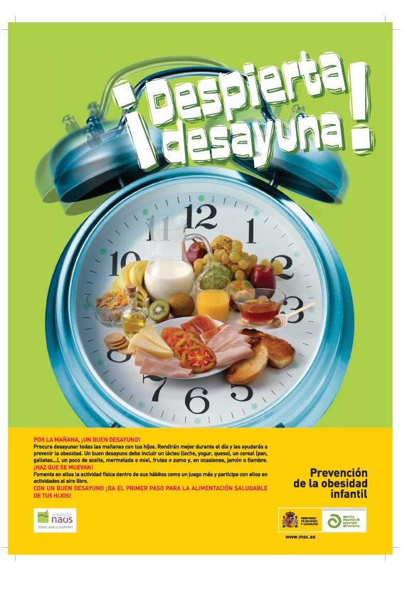

Quiere vender
Busca aumentar las ventas de un producto o servicio.
Una mochila nueva
«¡Descubre sus bolsillos!»
«¡Descubre sus bolsillos!»
Detrás de cada anuncio hay una intención. Mira con atención, busca sus pistas y descubre cómo se construye un mensaje.
Preparando el contexto…
Antes de poner nombres, observo cómo se combinan palabras, imágenes y firma.
01 · OBSERVO → 02 · IDENTIFICO
Míralo primero. Después elige una parte y pulsa sobre una de las cuatro zonas numeradas.

Anuncio original extraído de la página 3 del material escolar, sin modificar. Abrir en grande ↗
Las etiquetas aparecerán cuando encuentres cada parte.
Este es un cartel: ese soporte es su medio de difusión. El mismo mensaje podría circular por otros canales.
Conecto los elementos con su función.
La publicidad informa al público sobre productos o servicios de empresas e instituciones.
Busca aumentar las ventas de un producto o servicio.
Propone comportamientos beneficiosos: ahorrar energía o cuidar la alimentación.
El eslogan es una frase breve y fácil de recordar que resume una idea del anuncio. Forma parte del mensaje.
El medio de difusión es el canal: prensa, revistas, radio, cine, televisión, Internet, vallas o marquesinas.
Muchas grandes empresas tienen un departamento de publicidad que elabora y difunde mensajes. Otras contratan agencias de publicidad, empresas especializadas en diseñarlos y realizarlos.
Observo el ejemplo y después descubro la estrategia.
El mensaje se repite muchas veces y por distintos medios para que se recuerde.
Se presentan ventajas desmedidas para despertar interés. Hay que observar qué promete realmente el anuncio.
Se vincula la marca con famosos, canciones o emociones para atraer la atención.
Se ofrecen descuentos, regalos o facilidades de pago para animar a comprar.
Material de continuidad de 5.º trabajado en Sociales 6.º · 5_LI_La publicidad, páginas 1–3.
Con pistas y nuevos intentos
Retos breves con pistas y nuevos intentos. Puedes volver al contenido cuando lo necesites.
Comprobación formativa
Una comprobación formativa por bloques. Cada repetición puede traer otros ejemplos.
No hay pistas durante esta parte. Después de cada respuesta verás una explicación breve. Al final tendrás un mapa de las ideas que salieron firmes y de las que conviene seguir practicando.